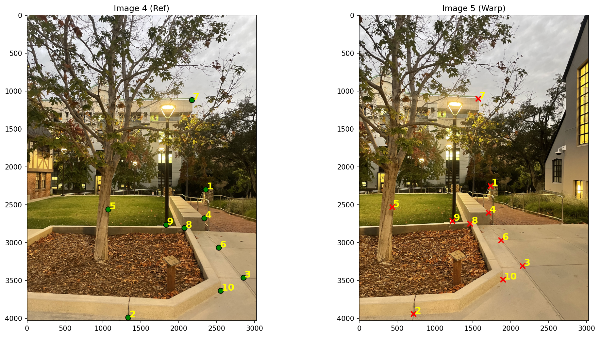
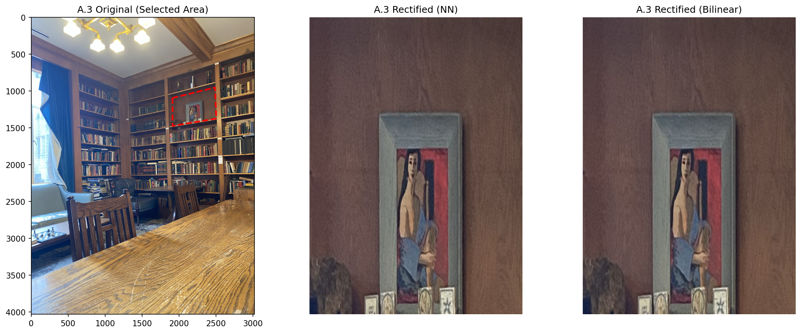
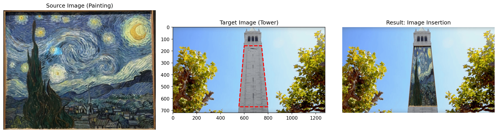
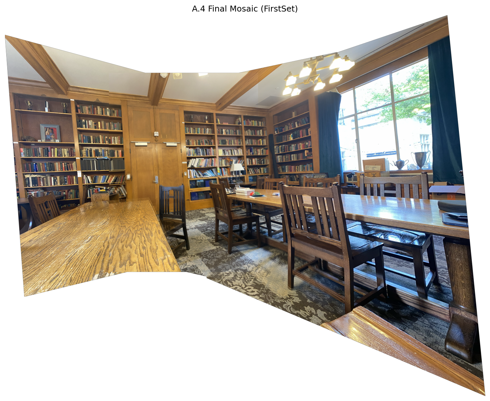
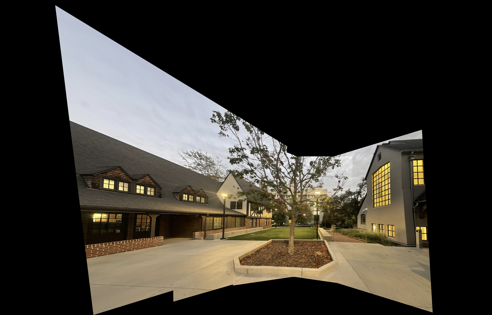

To complete this project I a modular, OOP paradigm within Python. The logic is divided into different classes:
HomographyCalculator: This class implments Direct Linear Transform (DLT) and Singular value Decomposition (SVD) to get the homography matrix H.
ImageWarper: this class handles the inverse warping and implements nearest neighbor and Bilinear interpolation
MosaicBlender: managers the alignment of warped images and implements weighted blending using distance transform AKA Feathering.
PointCollector: Just used clickable interface leveraging matplotlib.ginput to select correspondences, with caching too
Everything is coded up leverating NumPy since OpenCV functions like cv2.findHomography, cv2.warpPerspective, etc weren't allowed.
Pictures/h2>
To get transformation between images being projective (a perspective transform), my photos were taken by fixing the center of project and rotating the camera. So essentially, I tried to twist my phone on the axis of where the camera is (since iphone cameras are offset) and tried not to wiggle my phone on its x axis. To make the mosaicing possible, between shots there was some photo overlap.
(Note: If you wish to display your input images here, place them in the media/ folder and uncomment the sections below).
Recovering Homographies
For image alignmen the projective transformation between photos needed to be recovered. This transformation is a Homography, which is a a 3x3 matrix \(H\) w/ 8 degrees of freedom. The last element is a scaling factor normalised to 1. The relationship betwee point \(p\) in one image and its corresponding point \(p'\) in another is given by: \(p' = Hp\).
Using DLT & SVD
I used DLT, so given a set of corresponding points (same places in the overlap of two images) \((x, y)\) and \((x', y')\),up a system of linear equations \(Ah = 0\), where \(h\) is a vector containing the 9 elements of \(H\) can be made. Thus, frome each set of points from the same place (a correspondence) I got two equations, forming two rows in the matrix A:
$$
\begin{bmatrix}
x & y & 1 & 0 & 0 & 0 & -x'x & -x'y & -x' \\
0 & 0 & 0 & x & y & 1 & -y'x & -y'y & -y'
\end{bmatrix}
h = 0
$$
A minimum of 4 points (8 equations) are required. For improvemtns against noise, I use more point, (the returns were extremely diminishing after 6 points), to get a overdetermined system. The leasat squared solution which minimizes \(||Ah||\) with SVD. The solution \(h\) is the eigenvector which represents the smallest singular value of \(A\).
Getting Correspondences
To get the corresponded I used matplotlib.ginput, to put the adjacent images side by side and then I would click points that were within the overlap of both images and saved these points.
Correspondences from matplotlib.ginput

Warping
With \(H\) is recovered, the images are warped into alignment. I used Inverse Warping to prevent holes new image. For every pixel in the destination image, I get the corresponding location in the src image via the inverse homography: \(p = H^{-1}p'\).
Interpolation methods
Since the calculated source coordinates \(p\) become fractional often, I interpolated the pixel value. Two methods for these were coded:
Nearest Neighbor: rounds the coords to the nearest integer pixel value. Pros of this method are speed, but it introduced aliasing often..
Bilinear Interpolation: Gets a weighted average of the four neighboring pixels. Slower but a lot smoother results.
Image Rectification
To see the homography calculation and warping implementation, I did image rectification. I take a photo and select a known rectangular (in real life) in the scene that scence which now appears skewed due to perspective and warp it to be front parallel.

Image Insertion
To play with those same principles of homography and warping I wanted to project one image onto a planar surface in another image. I calculated the homography mapping the four corners of the source image to four selected points on the target surface, warp the source, and overlay it. I did it for the starry night on the campinille but with more time I want to more creatively experiement, and leverage blending from the last project to make it look nicer.

Blending seperate Images into a Mosaic
Now I warp all images into a common reference frame, and then blend them to create a (mostly) seamless mosaic.
Multi-Image Pipeline
For mant of images, I first get the pairwise homographies. Then a central image is chosen as the reference frame. Homographies get chained via matrix multiplication and inverstion in order to transform all other images into this reference frame (for example: \(H_{3\to1} = H_{2\to1} \cdot H_{3\to2}\)).
Blending Feathering
Overlaying images makes for seamsb bewteen the imaeges. To mitigate this problem, I used use feathering. I did this via the Distance Transform.
The distance Ttansform get the distance from every pixel to the nearest edge of the image, and then through normalizing this map, weights are created tthat are high near the center and decrease smoothly to 0 at the edges. Then, the final mosaic gets calculated as \(Mosaic = \frac{\sum (W_i \cdot I_i)}{\sum W_i}\).
Final Mosaics
Mosaic 1: FirstSet

Mosaic 2: SecondSet

Interestingly, the leaves did not turn out well, due to the wind when taking the photos, as seen by the building behind being aligned well. Also a seam from auto iPhone lighting adjusments can be seen.